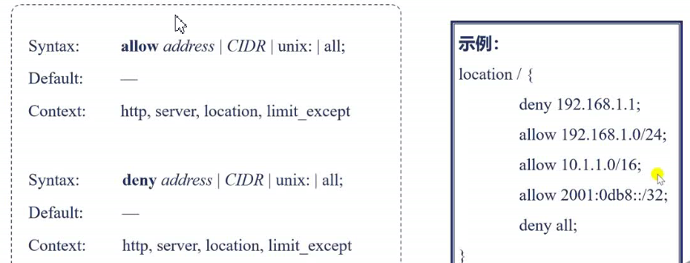
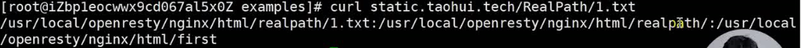

3_详解HTTP模块
冲突的配置指令
Listen指令
处理HTTP请求头的流程
接收请求事件模块
clinet_header_buffer_size 从链接内存池中分配，用于接收内核中的请求数据接收请求HTTP模块
Nginx中的正则表达式
检测正则表达式工具：pcretest，下载源码安装
如何找到处理请求的server指令块
详解HTTP请求的11个阶段
11个阶段的顺序处理
postread阶段：获取真实客户端地址的realip模块
rewrite阶段的rewrite模块：return指令
return指令
error_page指令
return与errpr_page指令优先级
- 上图中location块return 语句优先级高于server块 error_page
- server块 return语句优先级高于 location块return语句
rewrite阶段的rewrite模块：重写URL
rewrite指令
rewrite示例
- 访问/first/3.txt 输出 third!
- 去掉 break后 访问/first/3.txt 输出 second!
- 访问 /redirect1/ 返回301
- 访问 /redirect2/ 返回302
- 访问 /redirect3/ 返回302
- 访问 /redirect4/ 返回301
rewrite_log on; //默认关闭 ，开启重定向日志，写入error_log文件
rewrite阶段的rewrite模块：条件判断
if指令

if条件表达式
if条件表达式实例
find_config截断：找到处理请求的location指令块
location指令
merge_slashes 合并连续/ , 启用base64等时需要关闭location匹配规则
location匹配顺序
- 精确匹配
- ^~匹配上后不再进行正则匹配
- 正则匹配
- 最长前缀匹配
- 示例1
访问 http://domain/Test1/Test2
无精确匹配，无^~匹配，前缀正则匹配成功，所以输出longest regular expressions match - 示例2
访问 http://domain/Test1/Test2/
无精确匹配，无^~匹配，前缀正则匹配不成功，前缀匹配成功，所以输出 longest prefix string match
preaccess阶段：对连接做限制的limit_conn模块
限制并发连接数
preaccess阶段：对请求做限制的limit_req模块
限制链接请求数
access阶段：对ip做限制的access模块
access阶段：对ip做限制的access模块
进入access阶段前不生效
 192.168.1.0/24子网掩码 2001:0db8::/32 ipv6子网掩码引入黑名单配置文件：新建blocksip.conf ,并引入inclue blocksip.conf
access阶段：对用户名密码做限制的auth_basic模块
auth_basic模块的指令
生成密码文件
工具 httpd-tools
命令 htpasswd -c file -b user pwd
文件内容格式如下：
1 | # commet |
当提供一些简单的页面服务时，快捷得对他们做安全保护可使用auth_basic（如goaccess页面）
access阶段：使用第三方做权限控制的auth_request模块
可配置提供统一的第三方鉴权系统
说明：
- 访问http://access.taohui.tech页面
- 转发到第三方权限控制模块http://127.0.0.1:8090/auth_upstream
- 若返回200，则返回访问html/文件夹下的index.html
- 若返回403，则返回第三方模块返回的错误
access阶段的satisfy指令
控制指令的行为
satisfy指令说明
satisfy any任意一个指令成功即成功 satisfy all任意一个指令失败则失败问题
- 不会生效，return指令在rewrite阶段已执行，return，access配置的先后顺序无关
- 有影响，
- 可以访问，satisfy any表示 access模块任何一个成功则通过access模块验证
- 配置文件指令顺序无关
- 没有机会
precontent阶段：按序访问资源的try_files模块
实时拷贝流量：precontent阶段的mirror模块
content阶段：详解root和alias指令
static 模块提供的三个变量
request_filename、document_root、realpath_root
生成待访问文件的三个相关变量
realpath是软连接，指向first文件夹 static模块对url不以斜杠结尾访问目录的做法

index和autoindex模块的用法
指定index文件
index模块先于autoindex模块执行，所以有时访问目录会返回目录下的index页面
autoindex
可通过--without-http_autoindex_module禁用autoindex
提升多个小文件性能的concat模块
access日志的详细用法
日志配置
buffer 减少磁头旋转，减少寻址时间日志文件包含变量时的优化
HTTP过滤模块的调用流程
content模块之后，log模块之前